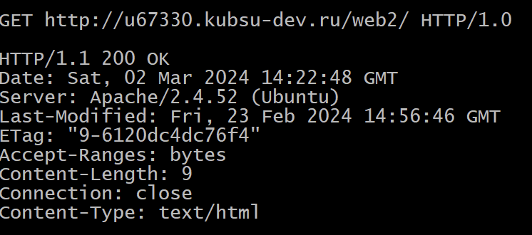
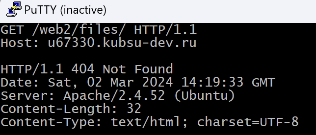
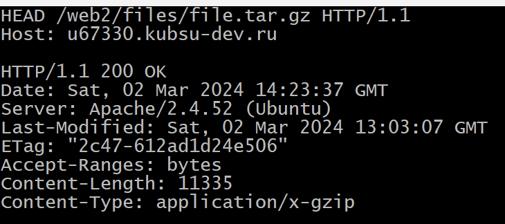
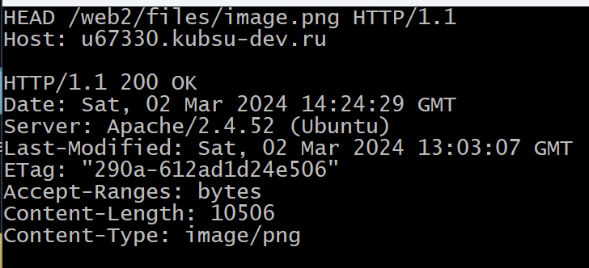
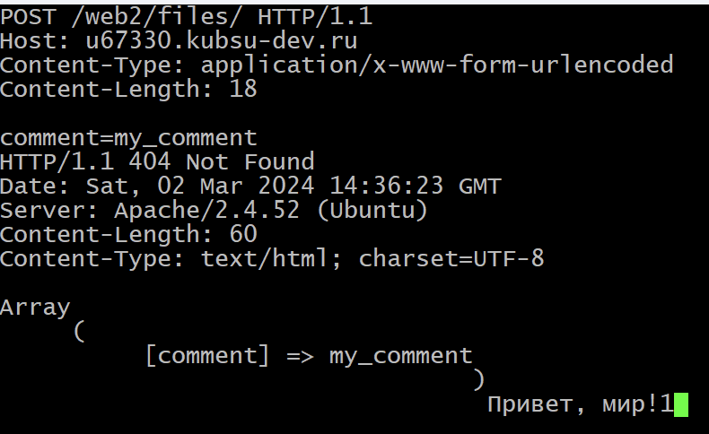
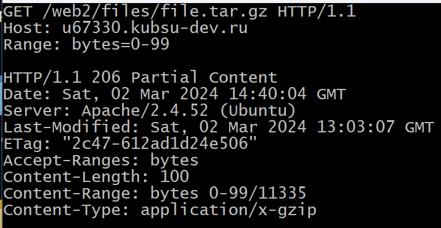
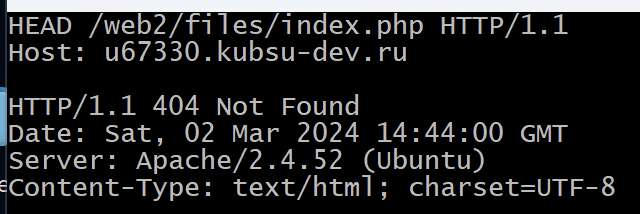

1) Получить главную страницу методом GET в протоколе HTTP 1.0 
2) Получить внутреннюю страницу методом GET в протоколе HTTP 1.1 
3) Определить размер файла file.tar.gz, не скачивая его - 11335 байт 
4) Определить медиатип ресурса /image.png - image/png 
5) Отправить комментарий на сервер по адресу /index.php 
6) Получить первые 100 байт файла /file.tar.gz 
6) Определить кодировку ресурса /index.php - UTF-8 